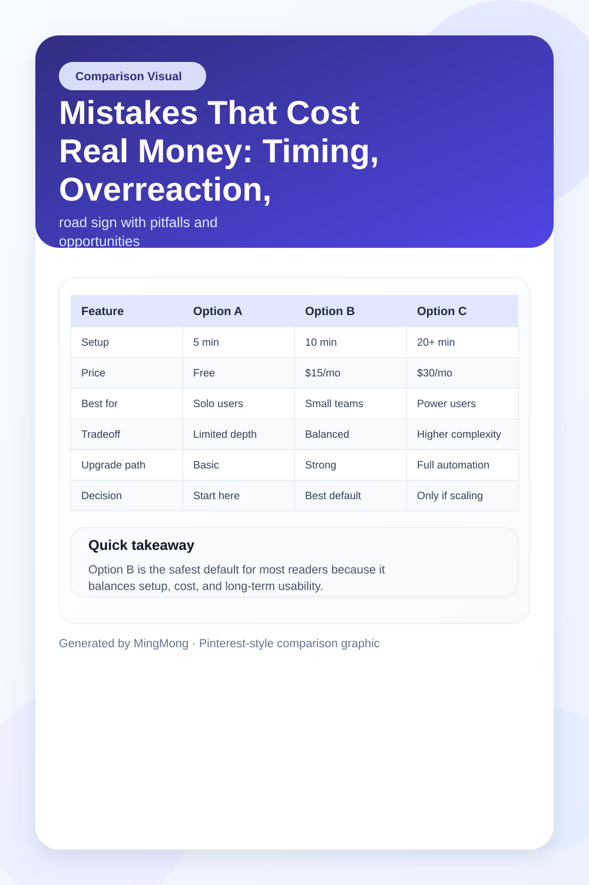
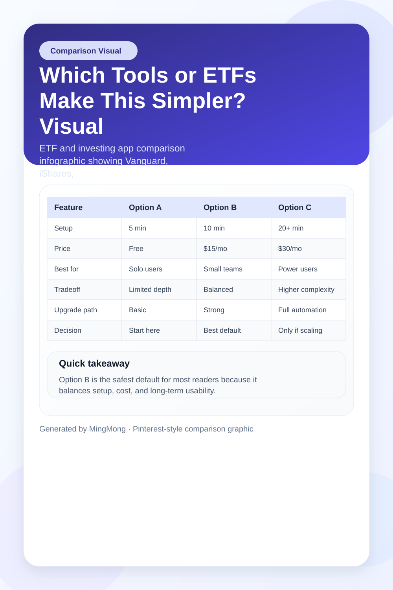

TL;DR
Start with one broad, low-fee ETF like VOO (US) or iShares Core MSCI World (EU). Track performance and costs every 30 days, not daily. Expect early swings—don’t react to drops under 15% in 3 months. Common mistakes: overtrading and overdiversifying too soon. Best beginner move: automate monthly contributions, review once per month.
Quick Answer: What to Use, How Much, and What to Expect
Start with a low-cost index fund like Vanguard S&P 500 ETF (VOO) or iShares Core MSCI World UCITS ETF for broad market exposure. For most US and EU beginners, $250–$500 is a reasonable minimum first step.
Commit to monthly reviews, not weekly reactions. Realistically, expect your investment to move up or down by 3–7% in the first month—this is normal volatility, not a mistake. If you’re deciding between a big name stock and a diversified ETF, the tradeoff is your risk: single stocks swing more wildly, ETFs soften the risk.
Best for: Anyone building a first portfolio or saving for a major goal over 3+ years. Tradeoff: Lower potential short-term upside, but less chance of significant loss early on. Decision: Start with one broad ETF, track it monthly, and ignore daily price blips. If you want a next step, look for a simple split—80% ETF, 20% single stock (like Apple or Nestlé)—but only after month two.
For follow-up, see articles on practical ETF comparisons or setting up automatic contributions.
Why Most Beginners Pick the Wrong AI Stocks (or Anything Else)
New investors rarely lack enthusiasm—they often have too much, especially after social media hype. This leads to a common mistake: chasing hot trends (AI stocks, electric vehicles, crypto) without understanding what drives prices or how risk operates. Many believe a 'safe' stock cannot lose 10% in three months, which is a dangerous misunderstanding of volatility.
Another frequent mistake is assuming that a solid company equals a solid investment at any price. Even top tech giants get overbought, and beginners buy at the peak from FOMO. The timing decision matters: money rushed in at the wrong moment doesn’t recover quickly and can mentally trap new investors.
Edge case: US and EU investors sometimes ignore how currency risk or regional economic shifts can impact global ETFs differently.
In practice, most beginners set no specific review date after buying. This leads to reactive selling when news gets scary—a step that almost always locks in losses. Instead, define risks upfront: ask if you’ll need this money in under 2–3 years and avoid investing it if so.
If you’re curious about scenarios where early trades go wrong, our practical mistake roundups walk through real first-year errors by new investors.
A 30-Day Screening Process: Your First Portfolio Review Workflow
Month one sets your discipline, not just your return. Here’s a step-by-step approach you can run every month to evaluate if your investment is on track, using real numbers and visible steps:
Step 1: Set your review date on your calendar now—ideally, 30 days from your first purchase. This removes emotional decisions.
Step 2: After 30 days, log into your investment platform. Check the price movement and dividend (if any) for each holding. Don’t just eyeball—record the value in a spreadsheet or simple app like Sharesight or Morningstar Portfolio.
Step 3: Check your all-in costs for each position (including any transaction or FX fees if you invested via a broker for US/EU stocks or ETFs). Compare those costs against your total gain or loss. Example: Your VOO ETF grew 1.5%, but fees ate 0.3%—your real gain is 1.2%.
Step 4: Google 'S&P 500 return last 30 days' or your relevant benchmark, then compare it to your result. Your fund will never match the index exactly, but if you’re lagging by more than 0.5–1% monthly (not due to fees), investigate why.
Step 5: Decide whether any holding looks out of place. If one stock is down 12% and the rest of your portfolio is flat or up, note it but do not sell yet. Flag for a deeper check next month—focus on the process over snap decisions.
Monthly rhythm: Repeat this process on the same date each month. Write down your decisions and your logic for holding, adding, or pausing. This builds good habits, not just good numbers.
If you want to automate part of this, several brokers (like Fidelity, Trade Republic, or Vanguard) now offer simple portfolio tracking and reporting tools for free.
A Simple Beginner Example With Numbers: Scenario and Consequence
Let’s assume you start with $500. You decide to invest $400 in the iShares Core MSCI World UCITS ETF (broad global exposure) and $100 in a single stock—let’s pick Microsoft—for learning purposes.
After 30 days, your ETF is up $12 (3%), but your Microsoft holding drops $15 (15% loss). If you panic and sell, you lock in that loss—classic beginner mistake number one. If you ignore the loss entirely, you risk snowballing the problem—mistake number two.
Scenario: You hold both for a second month, tracking performance and jotting your reasoning. In month two, Microsoft recovers and is now only down $7 (7% drop overall). ETF is now up $17 total (4.25% gain). You review your decisions in your log: "Held through month two as company fundamentals look stable."
Consequence: Had you sold in panic, you’d be nursing a $15 loss, but by following your monthly review cadence, your loss is cut to $7—and you understand the volatility lesson firsthand.
In practice, this approach means losses can shrink, and gains can compound. The decision to review at intervals—not adrenaline-driven trading—is the step that separates good outcomes from mistakes.
If you want a numbers-focused checklist for more advanced tracking, seek out our next article on building an investment logbook.
Mistakes That Cost Real Money: Timing, Overreaction, and Overengineering

Several pitfalls trip up new investors, often robbing them of modest but important early gains. The most common mistake is overdiversifying right away—grabbing five to ten stocks (or even sector ETFs) while only investing $500. The result? High transaction fees and zero meaningful diversification, which drags down returns and morale.
Another high-cost error: emotional buying or selling, triggered by media scares or market hype. These snap decisions often undo weeks or months of steady progress. The biggest decision is to accept that loss periods are not a signal to bail, but a step in building risk tolerance for the long term.
Where this breaks down: If your investment platform charges $5 per trade, four frantic buy/sell cycles can erase a 4% annual gain in a single quarter. And if you invest in US ETFs as an EU investor, hidden FX fees can severely shrink your real return—a tradeoff rarely considered in excited first investments.
Edge case: Setting up automatic recurring buys and ignoring price for the first six months can outperform poorly-timed manual trades driven by news cycles.
To avoid costly mistakes, stick with one to two broad ETFs until your monthly contributions reach at least $100/month. Only add complexity when you regularly hit that threshold without fee concerns.
If you’re curious about recurring errors and edge cases among US/EU beginners, check our mistakes archive and best-fit allocation breakdowns for first-time investors.
Which Tools or ETFs Make This Simpler? Visual Comparison and Tradeoff

For most beginners, the deciding factor is simplicity versus cost. Plain vanilla index ETFs like Vanguard S&P 500 (VOO, for US) or iShares Core MSCI World (for EU) are the best first step. They have tiny fees (as low as 0.03–0.20%) and nearly zero hidden costs, with hundreds of holdings.
In practice, VOO is ideal for those who want pure US exposure with minimal oversight, while iShares World ETF adds global flavor—critical if you are an EU investor avoiding currency risk.
If you need a platform, Trade Republic (EU) and Fidelity (US) both offer commission-free ETF trading and easy reporting, but Trade Republic is mobile-first and may feel limiting if you want advanced research tools.
Best free starting point: Trade Republic or Fidelity basic account with a single ETF auto-invest feature. Best paid upgrade: Investors adding $5,000+ who want in-depth research tools and more allocation options might prefer Interactive Brokers or Vanguard’s full-service platform.
Not worth it if: You’re investing less than $100/month but plan to buy five or more funds—fees will eat too much. Overkill: Anything with leveraged ETFs or sector-specific products in the first six months.
Tradeoff: Cheaper isn’t always less powerful, but pay attention to hidden currency conversion charges, especially when using US platforms from Europe. Decision: Choose an ETF with fees under 0.20% and a broker that lets you automate monthly buys with minimal charges.
If you want to see how these tools stack up for different portfolio sizes, check out our comparison next steps for platform choice.
FAQ
What metrics should I focus on when evaluating my investments?
Focus on total return (including dividends), all-in fees, and how your portfolio compares to a relevant benchmark index. For beginners, tracking your own gain/loss against the S&P 500 (US) or MSCI World (EU) offers a clear reference point.
How often should I review my investment choices?
For most beginners, monthly reviews are best. Weekly checks tend to promote overreaction, while waiting longer than a month may delay catching mistakes and reduces learning opportunities.
Is it a mistake to keep adding new stocks to my beginner portfolio?
Yes, overdiversification early on is a common beginner mistake. It increases costs, muddies your learning, and rarely adds true protection unless you’re investing substantial amounts each month.
What should I do if my investment drops 15% in the first three months?
Resist the urge to panic sell. Instead, review your original reason for investing and check for any changes in fundamentals. Most diversified ETFs recover if you stay consistent, but a rash decision nearly always locks in a loss.
This article is reviewed regularly for practical accuracy and is updated whenever underlying ETF fees, tool offerings, or investing rules change. All information is for educational purposes and not individual financial advice.
Next step
Use the article as a decision point, not just reading material. Your next system matters more than more browsing.
Search more articles
Find related tools, workflows, and guides.
Photo credits
- Photo 1: Kanchanara via Unsplash
- Photo 2: Chris Liverani via Unsplash
- Photo 3: Johannes W via Unsplash
- Photo 4: Compagnons via Unsplash